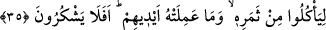

35. Tâ ki, onların meyvelerinden ve elleriyle bunlardan îmâl ettiklerinden
yesinler. Hâlâ şükretmeyecekler mi?
“Tâ ki, onların meyvelerinden ve elleriyle bunlardan îmâl ettiklerinden” şıra,
pekmez ve benzerlerinden “yesinler.”
Bu ifâde (önceki âyetteki) “
(yarattık)” fiiline bağlanmıştır. “Pınarlar
fışkırtma”dan sonraya bırakılması, pınarların meyve meydana gelmesinin şartlarından
olması sebebiyledir.
Yani kullar bizim hakkımızı edâ etmek üzere şükre devam etsinler ve adı geçen bağ,
bahçe, bostan ve hurma ağaçlarının meyvelerinden yesinler diye biz yeryüzünde
bahçeler ve hurma ağaçları yarattık, meyve vermeleri için gerekli şartları hazırladık.
Burada “elleriyle” ifâdesi güç ve kuvvetten kinâyedir. Çünkü iş yapma konusunda
insanın en kuvvetli organı elidir. Onun için çoğu zaman kinâye olarak güç ve kuvvet
yerine el zikredilir. Bunun benzeri “Bu, ellerinizin gönderdiğinin/kendi ellerinizle
yapmış olduğunuzun karşılığıdır.” (Âl-i İmran 3/182) ifâdesidir. Acemlerin
“Kendimize kendi elimizle yaptık” şeklindeki sözlerinde olduğu gibi aslında sen bizzat
eli kasdetmezsin. Nitekim Keşfü’l-esrâr’da böyle geçmektedir.
Âyetteki “ ” harfinin olumsuzluk için olduğu da söylenmiştir. Buna göre mânâ bu
meyveler onların fiili ile değil, Allah Teâlâ’nın yaratmasıyla meydana gelmiştir,
demektir.
Hâ zamiri olmaksızın “
” şeklindeki kırâat birincisini (mâ’nın mevsule
olduğu görüşünü) te’yid eder. Çünkü sıla cümlesinden âid zamirinin kaldırılması
diğerlerinden hazf edilmesinden daha güzeldir.
“Hâlâ şükretmeyecekler mi?” Onların yukarıdan beri sayılan nimetlere şükr
etmemelerini reddetmek ve çirkin bulmak anlamınadır. Yani onlar bu nimetleri
görüyorlar veya bu nimetlerden faydalanıyorlar da tevhîd, takdîs ve tahmîd ile Allah’a
şükretmiyorlar mı?
Bahru’l-hakâik müellifi der ki: “Ehl-i işâretin dilinde âyetin mânâsı şöyledir: Gönül
toprağını inâyet yağmuruyla dirilttik. Ruhlar ondan gıdalansınlar diye ondan tâat
dânesini çıkardık. Zikir hurmalarından, şevk üzümlerinden/asmalarından bahçeler
yaptık ve orada hikmet pınarları akıttık ki mükâşefe ve müşâhede meyvelerinden
faydalansınlar. Sadakalardan ve hayırlardan yaptıkları amellerin neticelerine
şükretmezler mi? Yani bu zâhirî ve bâtınî nimetlere şükretmeleri gerekir ki bu onların
artmasına sebep olsun. “Eğer şükrederseniz, elbette size (nimetimi) artıracağım”
(İbrâhim, 14/7)”
Şükredersen artar nimet
Az oldu, çok oldu kargaşası gönülden gider